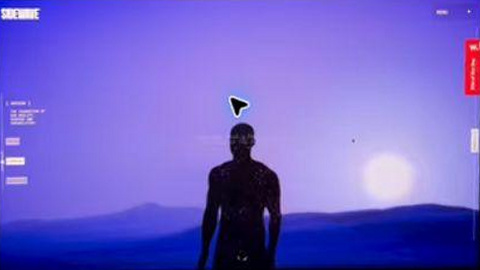

Loading reference sequence…
Scroll to move through the recorded scenes ↓
This page reconstructs the visible recorded presentation using the scenes supplied in your reference. Scroll forward and backward, or use the scene controls. The graphics, camera views and text inside the scene come from the recording.
Reference creator: Jerry the Web Dev. This study is not affiliated with the creator or the displayed brand. It is not the original interactive application, store, or payment service.
The source records a screen. Cropping, perspective, motion blur and clipped page edges remain. This reproduces recorded visuals rather than recovering the original application.
The earlier independently illustrated version is retained separately. No original private source code, models, checkout logic or unpublished page content has been recovered. Recorded controls inside the scene are part of the footage; use this page’s scene controls to navigate.
Reference reconstruction · Source quality · Use the range control or Left/Right arrow keys for individual steps. Reduced-motion users can use the controls without scroll playback.